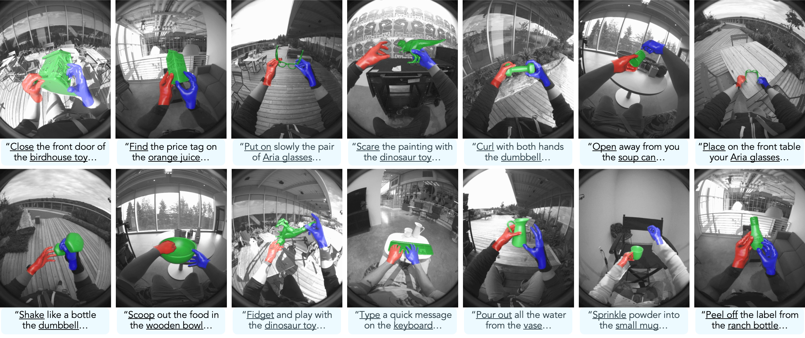
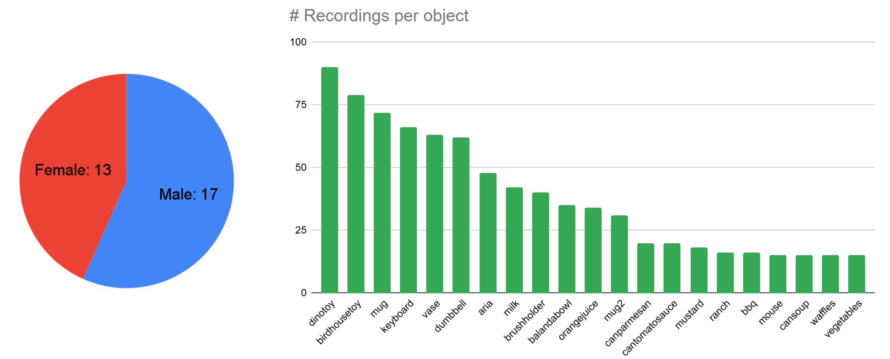
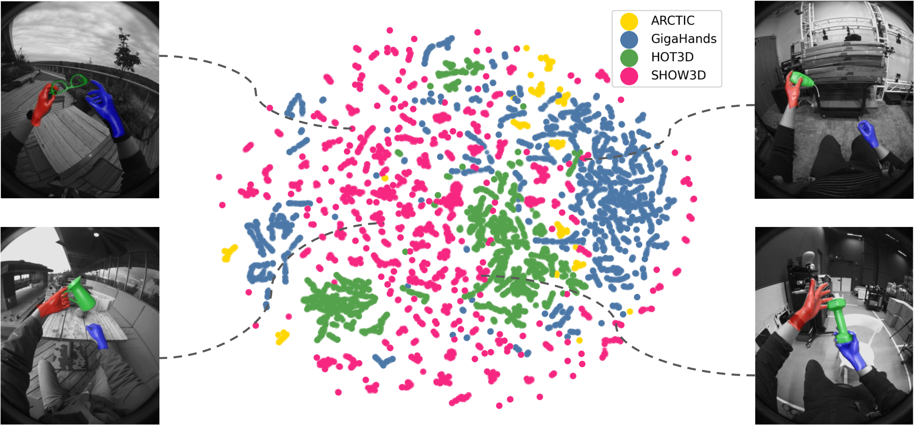
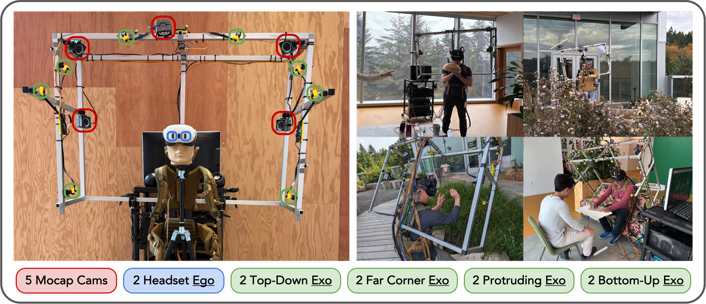
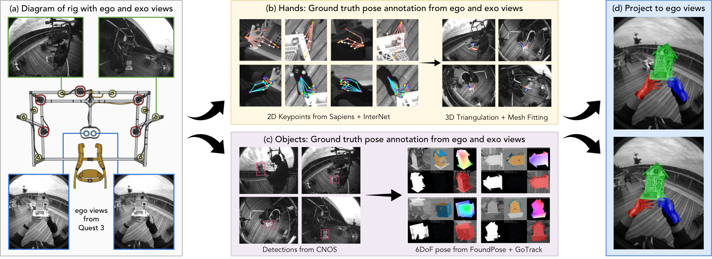
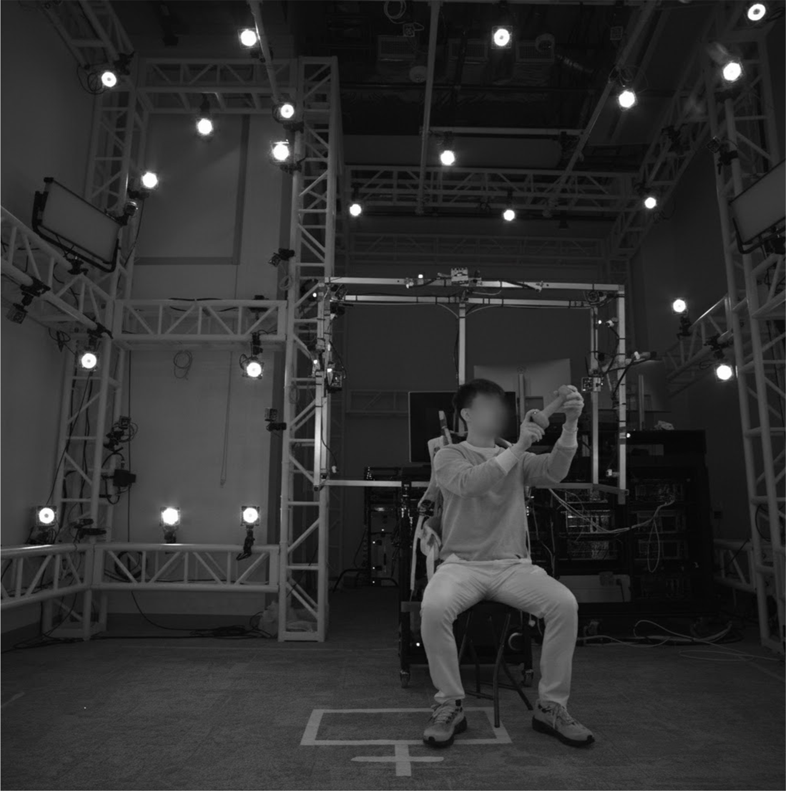
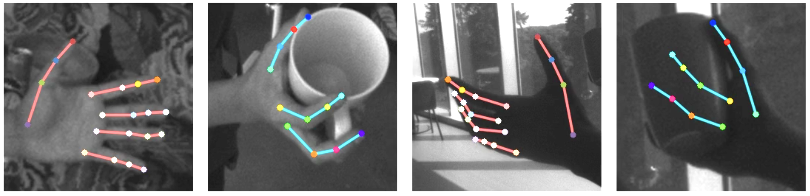
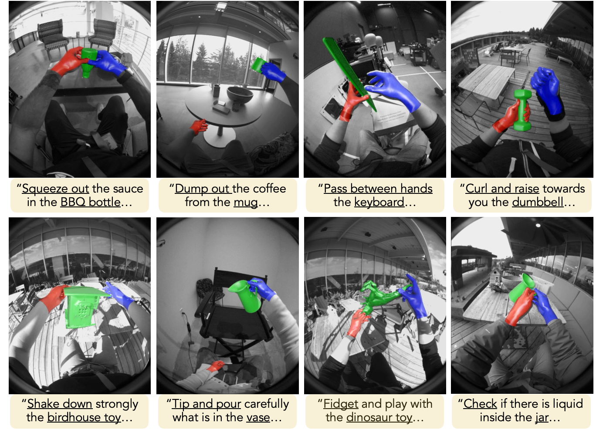
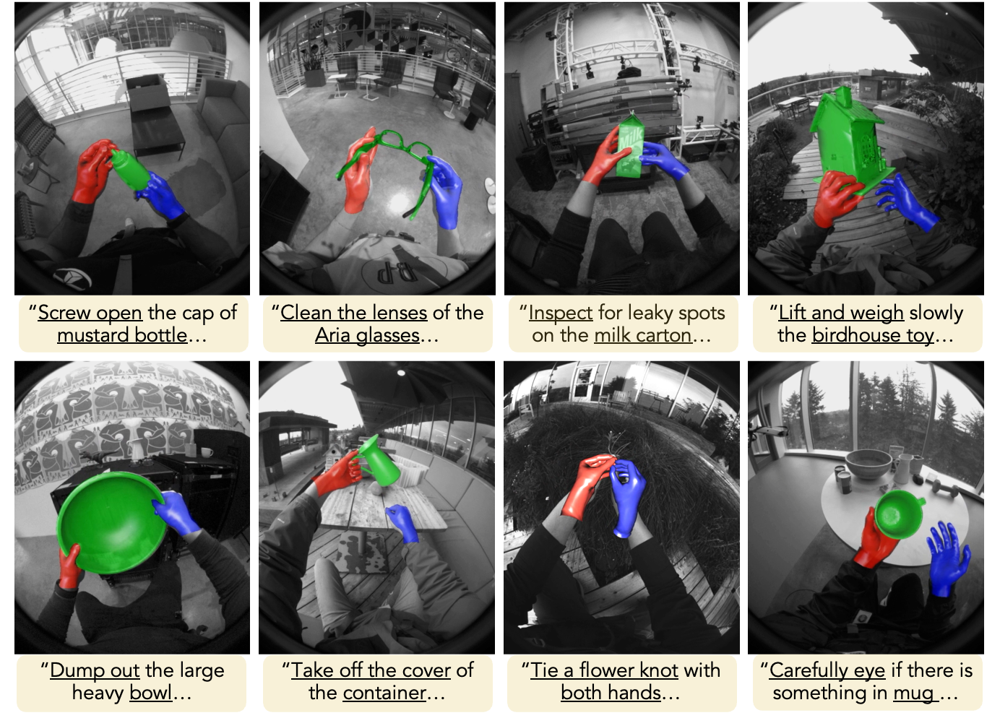

SHOW3D is the first dataset of in-the-wild hand–object interactions with accurate 3D annotations as well as text descriptions. Captured with a novel mobile multi-camera rig across diverse indoor and outdoor scenes. Overlays show 3D annotations projected to egocentric images (hands in red and blue, object in green).
TL;DR
SHOW3D is the first large-scale dataset of people using their hands to manipulate objects in the wild — outdoors, on the move, across everyday environments — captured with studio-grade 3D ground truth: full hand meshes, 6DoF object poses, and natural-language action captions.
Dexterous manipulation is the central bottleneck for physical AI — the robots and embodied agents that are the next frontier of the field. But nearly all hand–object data is recorded in controlled studios, so policies trained on it stumble the moment they meet the real world. SHOW3D delivers realistic, accurately labeled human demonstrations at scale, giving manipulation and world-model policies the in-the-wild grounding they need to generalize from the lab to reality.
Contributions
Dataset
| Dataset | Ego / Exo | Frames | Hand Pose | Obj Pose | Objects | Subjects | Environment | Annotation |
|---|---|---|---|---|---|---|---|---|
| SHOW3D (ours) | 2 / 8 | 4.3M | Both / Mesh | ✓ | 21 | 38 | In-the-wild | Mono + optimization |
| GigaHands | 0 / 51 | 3.7M | Both / Mesh | ✓ | 417 | 51 | Studio | RGB + optimization |
| ARCTIC | 1 / 8 | 2.1M | Both / Mesh | ✓ | 11 | 10 | Studio | MoCap |
| HOT3D | 3 / 0 | 1.7M | Both / Mesh | ✓ | 33 | 19 | Studio | MoCap |
| TACO | 1 / 12 | 363K | Both / Mesh | ✓ | 196 | 14 | Studio | MoCap |
| OakInk2 | 1 / 3 | 993K | Both / Mesh | ✓ | 75 | 9 | Studio | MoCap |
| HOI4D | 2 / 0 | 2.4M | Both / Mesh | ✓ | 800 | 4 | Studio | RGB-D + manual |
| HO-Cap | 1 / 9 | 699K | Both / Mesh | ✓ | 64 | 9 | Studio | RGB-D + optimization |
| HOGraspNet | 0 / 4 | 1.5M | Single / Mesh | ✓ | 30 | 99 | Studio | RGB-D + optimization |
| Ego-Exo4D | 2 / 4 | >100M | Both / Skel. | ✗ | Many | 740 | In-the-wild | RGB + manual |
| AssemblyHands | 4 / 8 | 203K | Both / Skel. | ✗ | Many | 20 | Studio | RGB + manual |
| EgoDex | 1 / 0 | 90M | Both / Skel. | ✗ | Many | — | Studio-like | Apple Vision Pro API |
Comparison with existing hand–object interaction datasets. SHOW3D uniquely combines in-the-wild capture with dense, accurate 3D annotations for both hands and objects.

Dataset statistics. Participant distribution (left) and number of recordings per object (right).

Cross-dataset feature diversity. UMAP embeddings show that SHOW3D (pink) spans a broad visual manifold, bridging compact studio dataset clusters (GigaHands, HOT3D, ARCTIC).
Mobile Capture System
We design a portable, backpack-style multi-camera capture rig weighing roughly eight kilograms. Eight monochrome fisheye cameras are rigidly mounted in a half-dome configuration. Participants also wear a Meta Quest 3 headset providing two additional egocentric views. All ten cameras are hardware-synchronized at 60 Hz and precisely calibrated into a shared 3D reference frame, enabling capture in diverse environments—including outdoors—without restricting natural range of motion.

Our mobile multi-camera capture rig. Left: hardware layout with five MoCap cameras (red), eight exocentric fisheye cameras in a half-dome configuration (green), and two egocentric cameras on the Meta Quest 3 headset (blue). Right: the rig in use during in-the-wild capture sessions.
Ego-Exo Annotation Pipeline
To generate accurate 3D annotations, we develop an ego-exo fusion pipeline. For hand pose, we fuse 2D keypoint predictions from Sapiens and InterNet via RANSAC-based triangulation across all ten cameras, then fit personalized hand meshes via Inverse Kinematics. For object pose, we extend CNOS, FoundPose, and GoTrack with multi-view gPnP to estimate and refine 6DoF object poses. Both components produce confidence estimates used for automated quality filtering.

Ego-exo annotation pipeline. (a) Multi-view fisheye input from ego and exo cameras. (b) Hand keypoints fused from Sapiens and InterNet, fitted via Inverse Kinematics. (c) CAD-based 6DoF object pose via CNOS → FoundPose → GoTrack. (d) 3D annotations projected into ego cameras for downstream model training.
GT Quality Validation
We validate the quality of our 3D hand ground truth against two independent references: a 30-camera stationary dome for controlled studio evaluation, and manual multi-view keypoint annotation for in-the-wild evaluation. Across both protocols, SHOW3D achieves sub-centimeter median MPJPE, including the most challenging hand-object interaction setting.

Dome validation. We capture synchronized sequences with the mobile rig inside a high-coverage 30-camera dome, enabling direct comparison between rig-derived annotations and dome-derived 3D keypoints.

Manual validation. Human annotators label 2D hand keypoints across available in-the-wild views; valid labels are triangulated with RANSAC to provide an independent reference.
Controlled in-studio validation with a high-fidelity multi-camera system. This tests whether the mobile rig recovers accurate 3D hand pose when compared with dense external camera coverage.
In-the-wild validation from crowd-sourced 2D keypoints. This provides a more independent stress test for outdoor lighting, occlusion, and hard hand-object interaction frames.
Dome HOI
Manual HOI
all categories
| Reference | Category | Median ↓ | P90 ↓ |
|---|---|---|---|
| Dome | No interactions | 6.28 | 7.31 |
| Hand-hand interaction | 7.46 | 8.95 | |
| Hand-object interaction | 7.90 | 12.53 | |
| Manual | No interactions | 5.65 | 12.35 |
| Hand-hand interaction | 6.03 | 14.63 | |
| Hand-object interaction | 6.36 | 16.48 |
Ground-truth hand annotation quality. Median and 90th percentile per-frame MPJPE in millimeters, evaluated against Dome and Manual references.
Experiments
3D Hand Pose Estimation
We train UmeTrack on different dataset combinations and evaluate cross-dataset generalization. Models trained only on studio datasets (UmeTrack, HOT3D) regress substantially when evaluated on in-the-wild SHOW3D data. Adding SHOW3D training consistently improves performance across all test domains.
| # | Training set | Test set | MKPE (mm) ↓ |
|---|---|---|---|
| 1 | UmeTrack | SHOW3D | 22.2 |
| 2 | HOT3D | SHOW3D | 19.6 |
| 3 | UmeTrack + HOT3D | SHOW3D | 16.4 |
| 4 | SHOW3D | SHOW3D | 15.5 |
| 5 | UmeTrack + HOT3D + SHOW3D | SHOW3D | 14.3 |
| 6 | HOT3D | HOT3D | 14.0 |
| 7 | UmeTrack + HOT3D | HOT3D | 12.7 |
| 8 | UmeTrack + HOT3D + SHOW3D | HOT3D | 12.3 |
| 9 | UmeTrack | UmeTrack | 9.7 |
| 10 | UmeTrack + HOT3D | UmeTrack | 9.5 |
| 11 | UmeTrack + HOT3D + SHOW3D | UmeTrack | 9.6 |
3D hand pose estimation (MKPE, mm, lower is better). Models trained on existing studio datasets generalize noticeably worse to SHOW3D, highlighting the increased difficulty of in-the-wild data. Adding SHOW3D improves performance on both SHOW3D and HOT3D test sets.
Hand–Object Interaction Field Estimation
We evaluate cross-dataset generalization of the InterField model between SHOW3D and HOT3D. Training on SHOW3D and testing on HOT3D outperforms the reverse by a wide margin, confirming that in-the-wild data captures a broader distribution of interaction patterns.
| Train set | Test set | ADE (mm) ↓ | ACC (m/s²) ↓ |
|---|---|---|---|
| SHOW3D | HOT3D | 14.70 | 4.05 |
| HOT3D | HOT3D | 11.29 | 3.21 |
| HOT3D + SHOW3D | HOT3D | 8.80 | 2.16 |
| HOT3D | SHOW3D | 22.57 | 5.61 |
| SHOW3D | SHOW3D | 13.82 | 3.79 |
| SHOW3D + HOT3D | SHOW3D | 13.50 | 3.84 |
Interaction field estimation cross-dataset evaluation. Training on SHOW3D achieves 14.70 mm ADE on HOT3D, versus 22.57 mm (+54%) in the reverse direction — demonstrating that SHOW3D's broader environmental distribution enables better generalization.
Text-Driven 6DoF Object Pose Forecasting
We evaluate whether natural language descriptions improve future object pose prediction. Text conditioning consistently reduces forecasting error across objects and prediction horizons, confirming the value of SHOW3D's semantic annotations.
| Horizon | Condition | aria | bowl | cansoup | dinotoy | dumbbell | juice | keyboard | milk | mouse | mug | mustard | vase | waffles | Mean |
|---|---|---|---|---|---|---|---|---|---|---|---|---|---|---|---|
| 30 frames | w/o text | 58.5 | 43.1 | 28.3 | 45.7 | 89.7 | 30.3 | 51.0 | 31.9 | 26.6 | 32.6 | 57.5 | 24.2 | 36.1 | 42.7 |
| w/ text | 49.0 | 37.5 | 25.0 | 34.0 | 73.8 | 19.3 | 37.3 | 19.5 | 14.5 | 21.6 | 16.3 | 20.3 | 27.0 | 30.4 | |
| 60 frames | w/o text | 63.6 | 40.5 | 29.0 | 46.4 | 95.9 | 33.1 | 66.5 | 22.6 | 27.5 | 37.4 | 77.7 | 27.3 | 39.9 | 46.7 |
| w/ text | 57.0 | 32.7 | 28.4 | 37.5 | 89.0 | 21.1 | 34.6 | 25.2 | 24.7 | 24.4 | 19.0 | 26.3 | 35.1 | 35.0 |
Text-driven 6DoF object pose forecasting (average translation error, mm, lower is better). Text conditioning reduces mean error by 29% at 30 frames and 25% at 60 frames, with consistent improvements across nearly all objects.
Ground Truth Visualizations


Ground truth examples. Hand pose (red and blue), object pose (green), and text captions across diverse in-the-wild environments. Our pipeline achieves sub-centimeter median accuracy validated against independent gold-standard references.
BibTeX
@article{rim2026show3d,
title = {SHOW3D: Capturing Scenes of 3D Hands and Objects in the Wild},
author = {Rim, Patrick and Harris, Kevin and Copple, Braden and Han, Shangchen and
Xie, Xu and Shugurov, Ivan and An, Sizhe and Wen, He and
Wong, Alex and Hodan, Tomas and others},
journal = {arXiv preprint arXiv:2603.28760},
year = {2026}
}